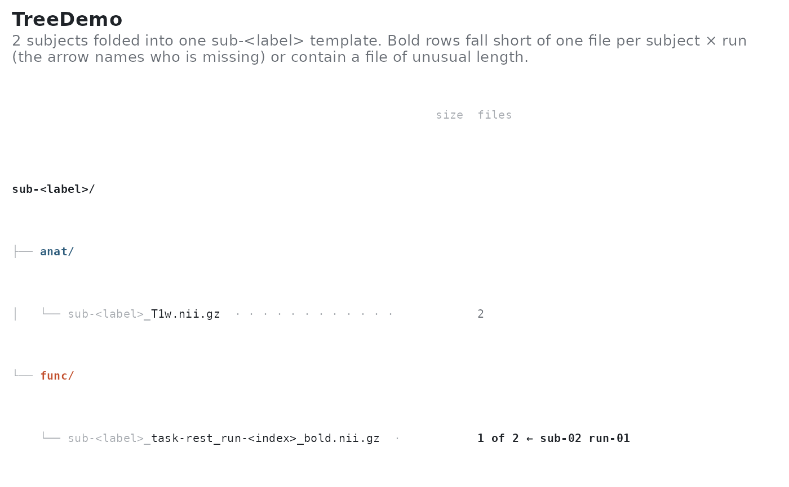

Plot the file layout of a BIDS project as a template tree
Source:R/plot_bids_matrix.R
plot_bids_tree.RdCollapses every subject (and session) into a single sub-<label> template
so the dataset's shape fits on one screen, then annotates each template
with how many subjects actually have it. Directories are drawn with their
datatype colour; files that some subjects lack are flagged.
Usage
plot_bids_tree(
x,
include_derivatives = TRUE,
collapse_runs = TRUE,
include_sidecars = TRUE,
max_rows = 60
)Examples
fs <- tibble::tribble(
~subid, ~session, ~datatype, ~task, ~run, ~suffix, ~fmriprep,
"01", NA, "anat", NA, NA, "T1w.nii.gz", FALSE,
"01", NA, "func", "rest", "01", "bold.nii.gz", FALSE,
"02", NA, "anat", NA, NA, "T1w.nii.gz", FALSE
)
mock <- create_mock_bids("TreeDemo", c("01", "02"), fs)
if (requireNamespace("ggplot2", quietly = TRUE)) {
plot_bids_tree(mock)
}
